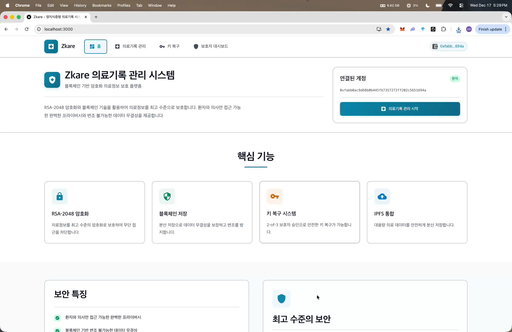
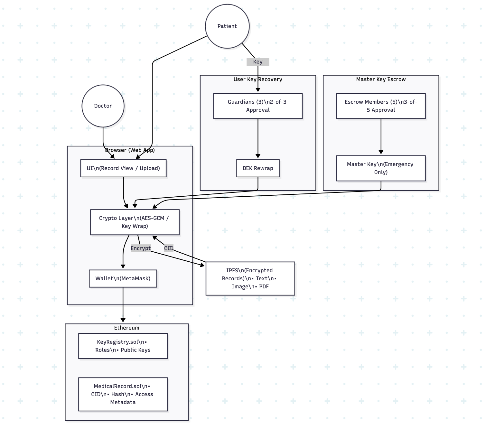

Project Overview
병원, 보험사, 연구기관으로 흩어지는 의료 데이터에서 환자의 통제권과 기록 무결성을 확보하는 것을 목표로 했습니다. 실제 의료 데이터는 암호화해 IPFS에 저장하고, 블록체인에는 CID, SHA-256 해시, 암호화된 키, 타임스탬프 등 검증에 필요한 메타데이터만 남기는 구조로 설계했습니다.

Graduation Project · 2024.03 ~ 2024.12
블록체인, IPFS, 하이브리드 암호화를 결합한 의료기록 관리 시스템입니다. 환자 중심 접근 권한, 기록 무결성 검증, 키 복구, 응급 접근 흐름을 1년간 설계하고 구현했습니다.
병원, 보험사, 연구기관으로 흩어지는 의료 데이터에서 환자의 통제권과 기록 무결성을 확보하는 것을 목표로 했습니다. 실제 의료 데이터는 암호화해 IPFS에 저장하고, 블록체인에는 CID, SHA-256 해시, 암호화된 키, 타임스탬프 등 검증에 필요한 메타데이터만 남기는 구조로 설계했습니다.

화면은 React로 구성하고, 브라우저의 Web Crypto API에서 암복호화를 수행했습니다. Ethereum 스마트컨트랙트는 공개키, 역할, CID, 해시, 접근 권한을 관리하며, IPFS와 Pinata는 암호화된 의료기록 본문을 보관합니다.

팀 리더로 참여하며 Key Recovery System 설계와 구현을 맡았습니다. 복구 요청 생성, 보호자 다중 승인, 키 재래핑 흐름, 복구 서비스 프로토타입을 설계했고 스마트컨트랙트와 프론트엔드 연동 테스트까지 진행했습니다.